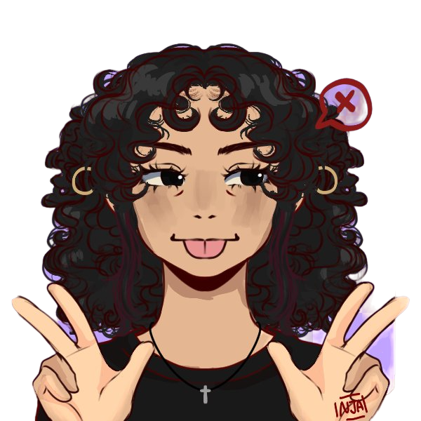

Ana Cristina
Estudante de front-end
Olá! Como vai? Eu sou a Ana Cristina, tenho 16 anos e moro em São Paulo SP. Estou no ensino medio, tentando me encontrar nesse mundão, explorando um pouquinho o universo da tecnologia e também fazendo alguns experimentos no laboratório de química! Tenho uma gata gordinha chamada Jujuba, amo tocar violino e conhecer coisas novas, principalmente conversar com pessoas! Seja vem vinde ao meu portfolio <3